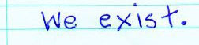
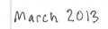
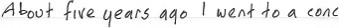

|
 |
|

ert; a friend must have been playing : I never leave the house except for food or if I feel very obligated. In the interval, I talked to Graham, an old friend of mine, and his son Jackson, who I knew a little.
I can't remember if I already knew Jackson was a drummer or was told so during the evening. I was certainly pleased to meet a drummer I liked. We agreed that Jackson would visit my house in Chorlton, Manchester one day after school in the following week and we would play together.
He did and it went well and we met a few times more, until my friend Mike told me that his son Joe had started hogging his old bass guitar and might like to play with Jackson and me. Not long afterwards, we were called "Edward Barton the Baby Men".
Our first song was an old one of mine,"Monkey does your Blackheads", the second, a new one: "Badger". Already I was aware that I would soon have to force a "no more songs about animals (at least for a while) rule" upon myself.
The first song, that we wrote together, started from a bass line of Joe's and a remark from Jackson. We had been to Liverpool to visit Che, who would soon complete us. It was lateish at night; Mike was in the passenmger seat because he hates driving but is good at directions and Jackson and Joe were in the back. I, driving, had suggested a few games of "Names Beginning with." We were doing girls' names beginning with "M" and slowing down. Mary, Maureen and Morag, and even Mabeline were miles behind us on the M62, and we were starting to imagine names, which obviously is not allowed. On his next turn, Jackson decisively announced "Meliker". I laughed a lot. I thought it was the best girl's name ever and congratulated him on his wit. He was however more interested in victory and with mild indignation informed me that there was a girl at his school called Melika/er.